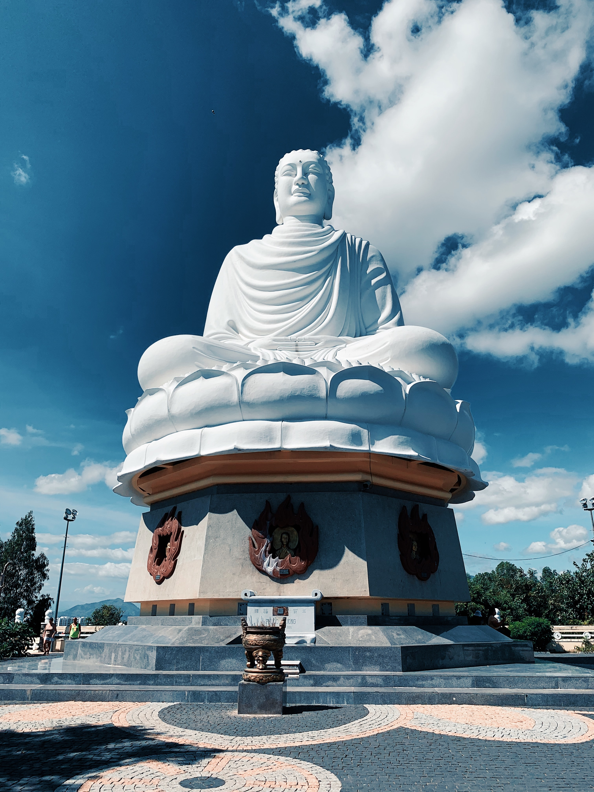

정구업진언
수리수리 마하수리 수수리 사바하(3회)
五方內外安慰諸神眞言
오방내외안위제신진언
나무사만다 못다남 옴 도로도로지미 사바하(3회)
開經偈
개경게
無上甚深微妙法 百千萬劫難遭隅 我今聞見得修持願解如來眞實義
무상심심미묘법 백천만겁난조우 아금문견득수지 원해여래진실의
開法藏眞言
개법장진언
옴 아라남 아라다(3회)
千手千眼觀自在菩薩 廣大圓滿無碍大悲心大陀羅尼 啓請
천수천안관자재보살 광대원만무애대비심대다라니 계청
稽首觀音大悲呪 願力弘深相好身 千臂莊嚴普護持 千眼光明便觀照
계수관음대비주 원력홍심상호신 천비장엄보호지 천안광명변관조
眞實語中宣密語 無爲心內起悲心 速令滿足諸希求 永使滅除諸罪業
진실어중선밀어 무위심내기비심 속령만족제희구 영사멸제제죄업
天龍衆聖同慈護 百千三昧頓薰修 受持身是光明幢 受持心是神通藏
천룡중성동자호 백천삼매돈훈수 수지신시광명당 수지심시신통장
洗滌塵勞願濟海 超證菩提方便門 我今稱誦誓歸依 所願從心悉圓滿
세척진로원제해 초증보리방편문 아금칭송서귀의 소원종심실원만
南無大悲觀世音 願我速知一切法 南無大悲觀世音 願我早得智慧眼
나무대비관세음 원아속지일체법 나무대비관세음 원아조득지혜안
南無大悲觀世音 願我速度一切衆 南無大悲觀世音 願我早得善方便
나무대비관세음 원아속도일체중 나무대비관세음 원아조득선방편
南無大悲觀世音 願我速乘般若船 南無大悲觀世音 願我早得越苦海
나무대비관세음 원아속승반야선 나무대비관세음 원아조득월고해
南無大悲觀世音 願我速得戒定道 南無大悲觀世音 願我早登圓寂山
나무대비관세음 원아속득계정도 나무대비관세음 원아조등원적산
南無大悲觀世音 願我速會無爲舍 南無大悲觀世音 願我早同法性身
나무대비관세음 원아속회무위사 나무대비관세음 원아조동법성신
我若向刀山 刀山自摧折 我若向火湯 火湯自消滅
아약향도산 도산자최절 아약향화탕 화탕자소멸
我若向地獄 地獄自枯渴我若向我歸 我歸自飽滿
아약향지옥 지옥자고갈 아약향아귀 아귀자포만
我若向修羅 惡心自調伏 我若向蓄生 自得大智慧
아약향수라 악심자조복 아약향축생 자득대지혜
南無觀世音菩薩摩訶薩 南無大勢至菩薩摩訶薩
나무관세음보살마하살 나무대세지보살마하살
南無千手菩薩摩訶薩 南無如意輪菩薩摩訶薩
나무천수보살마하살 나무여의륜보살마하살
南無大輪菩薩摩訶薩 南無觀自在菩薩摩訶薩
나무대륜보살마하살 나무관자재보살마하살
南無正趣菩薩摩訶薩南無滿月菩薩摩訶薩
나무정취보살마하살 나무만월보살마하살
南無水月菩薩摩訶薩 南無軍茶利菩薩摩訶薩
나무수월보살마하살 나무군다리보살마하살
南無十一面菩薩摩訶薩 南無諸大菩薩摩訶薩
나무십일면보살마하살 나무제대보살마하살
南無本師阿彌陀佛(3회)
나무본사아미타불
神妙章句大陀羅尼
신묘장구대다라니
나모라 다나다라 야야 나막알약 바로기제 새바라야 모지사다바야 마하사다바야 마하가로
니가야 옴 살바 바예수 다라나 가라야 다사명 나막 까리다바 이맘알야 바로기제 새바라 다바
니라간타 나막하리나야 마발다 이사미 살발타 사다남 수반아예염 살바보다남 바바말야
미수다감 다냐타 옴 아로계 아로가 마지로가 지가란제 혜혜하례 마하모지 사다바 사마라 사마라
하리나야 구로구로 갈마 사다야 사다야 도로도로 미연제 마하미연제다라다라 다린나례 새바라
자라자라 마라미마라 아마라 몰제예혜혜 로계새바라라아 미사미 나사야 나베사미사미 나사야
모하자라 미사미 나사야 호로호로 마라호로 하례바나마 나바사라사라 시리시리 소로소로
못쟈못쟈 모다야 모다야 매다라야 니라간타 가마사 날사남 바라 하라나야 마낙사바하 싯다야
사바하 마하싯다야 사바하 싯다유예 새바라야 사바하 니라간타야 사바하 바라하 목카싱하
목카야 사바하 바나마 하따야 사바하 자가라욕다야 사바하 상카섭나네 모다나야 사바하 마하라
구타다라야 사바하 바마사간타 이사시체다 가릿나이나야 사바하 먀가라 잘마이바 사나야 사바하
나모라 다나다라 야야나막알야 바로기제 새바라야 사바하(3번)
<四方讚>
<사방찬>
一灑東方潔道場 二灑南方得淸凉 三灑西方俱淨土 四灑北方永安康
일쇄동방결도량 이쇄남방득청량 삼쇄서방구정토 사쇄북방영안강
<道場讚>
<도량찬>
道場淸淨無瑕穢 三寶天龍降此地 我今持誦妙眞言 願賜慈悲密加護
도량청정무하예 삼보천룡강차지 아금지송묘진언 원사자비밀가호
<懺悔偈>
<참회게>
我昔所造諸惡業 皆有無始貪瞋癡 從身口意之所生 一切我今皆懺悔
아석소조제악업 개유무시탐진치 종신구의지소생 일체아금개참회
<懺除業障十二尊佛>
<참제업장십이존불>
南無懺除業障寶勝藏佛 寶光王火簾照佛 一切香華自在力王佛
나무참제업장보승장불 보광왕화렴조불 일체향화자재력왕불
百億恒河沙決定佛 振威德佛 金綱堅强消伏壞散佛
백억항하사결정불 진위덕불 금강견강소복괴산불
寶光月殿妙音尊王佛 歡喜藏摩尼寶積佛 無盡香勝王佛
보광월전묘음존왕불 환희장마니보적불 무진향승왕불
獅子月佛歡喜莊嚴珠王佛 帝寶幢摩尼勝光佛
사자월불 환희장엄주왕불 제보당마니승광불
<十惡懺悔>
<십악참회>
殺生重罪今日懺悔偸盜重罪今日懺悔 邪行衆罪今日懺悔
살생중죄금일참회 투도중죄금일참회 사행중죄금일참회
妄語衆罪今日懺悔 綺語衆罪今日懺悔兩舌衆罪今日懺悔
망어중죄금일참회 기어중죄금일참회 양설중죄금일참회
惡口衆罪今日懺悔 貪愛衆罪今日懺悔 瞋碍衆罪今日懺悔
악구중죄금일참회 탐애중죄금일참회 진애중죄금일참회
癡暗衆罪今日懺悔
치암중죄금일참회
百劫積集罪一念頓蕩除 如火焚枯草 滅盡無有餘
백겁적집죄 일념돈탕제 여화분고초 멸진무유여
罪無自性從心起 心若滅是罪亦忘 罪忘心滅兩俱空是卽名爲眞懺悔
죄무자성종심기 심약멸시죄역망 죄망심멸양구공 시즉명위진참회
懺悔眞言
참회진언
옴 살바 못자모지 사다야 사바하 (3회)
准提功德聚 寂靜心常誦 一切諸大難 無能侵是人
준제공덕취 적정심상송 일체제대난 무능침시인
天上及人間受福如佛等 遇此如意珠 定獲無等等
천상급인간 수복여불등 우차여의주 정획무등등
南無七俱肢佛母大准提菩薩
나무칠구지불모대준제보살 (3회)
淨法界眞言
정법계진언
옴 남(3회)
護身眞言
호신진언
옴치림(3회)
觀世音菩薩本心微妙六字大明王眞言
관세음보살본심미묘육자대명왕진언
옴 마니반메 훔(3회)
准提眞言
준제진언
나무사다남 삼먁 삼못다 구치남 다냐타
옴 자례주례 준제 사바하 부림(3번)
我今持誦大准提 卽發菩提廣大願 願我定慧速圓明
아금지송대준제 즉발보리광대원 원아정혜속원명
願我功德皆成就願我勝福遍莊嚴 願共衆生成佛道
원아공덕개성취 원아승복변장엄 원공중생성불도
如來十大發願文
여래십대발원문
願我永離三惡道 願我速斷貪瞋癡 願我常聞佛法僧
원아영리삼악도 원아속단탐진치 원아상문불법승
願我勤修戒定慧願我恒修諸佛學 願我不退菩提心
원아근수계정혜 원아항수제불학 원아불퇴보리심
願我決定生安養 願我速見阿彌陀 願我分身遍塵刹
원아결정생안양 원아속견아미타 원아분신변진찰
願我廣度諸衆生
원아광도제중생
發四弘誓願
발사홍서원
衆生無遍誓願度 煩惱無盡誓願斷 法門無量誓願學 佛度無上誓願成
중생무변서원도 번뇌무진서원단 법문무량서원학 불도무상서원성
自性衆生誓願度 自性煩惱誓願斷 自性法門誓願學 自性佛道誓願成
자성중생서원도 자성번뇌서원단 자성법문서원학 자성불도서원성
發願已 歸命禮三寶
발원이 귀명례삼보
南無常住十方佛 南無常住十方法 南無常住十方僧
나무상주시방불 나무상주시방법 나무상주시방승 (3번)